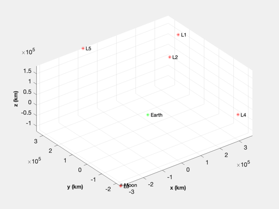
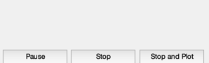
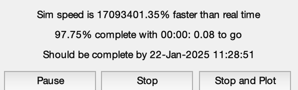
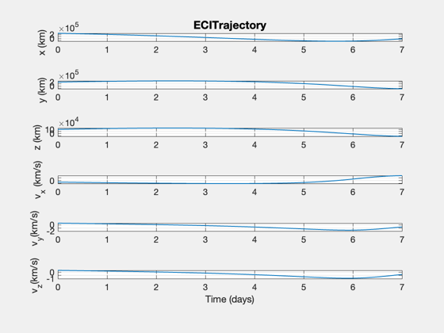
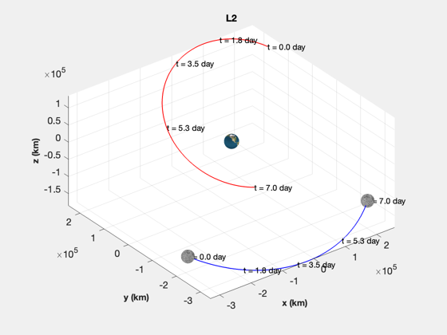

Simulate a spacecraft in orbit near the earth and moon.
Uses two stored gravity files, EarthGravityModel.mat and LunarGravityModel.mat. ------------------------------------------------------------------------ See also FEarthMoonSun, LagrangePointsL1ToL5, and TransformLagrangePoints. , Constant, Plot2D, TimeGUI, TimeLabl, TitleS, Date2JD ------------------------------------------------------------------------
Contents
- Globals for the GUI
- Spacecraft Mass
- These have been saved in mat files
- Use point mass models
- The number of steps
- Create the time array
- Specify the ode113 accuracy
- Set up the position and velocity vectors. Units are km and km/s.
- Initialize the time display
- Initialize the plotting array
- Flag
- Simulate
- Close the time GUI
- Quit if you hit the stop button
- Plot the orbit
- Plot the earth, moon and trajectory in 3D
%------------------------------------------------------------------------------- % Copyright (c) 2004 Princeton Satellite Systems, Inc. All rights reserved. %-------------------------------------------------------------------------------
Globals for the GUI
%-------------------- global simulationAction simulationAction = ' ';
Spacecraft Mass
%---------------- d = struct('mass',1000); d.jDStart = Date2JD; % Today d.muSun = 1.327124e+11; kLP = 2;
These have been saved in mat files
%----------------------------------- d.earth = load('EarthGravityModel.mat'); d.moon = load('LunarGravityModel.mat');
Use point mass models
%----------------------
d.earth.nZ = 0;
d.earth.nT = 0;
d.moon.nZ = 0;
d.moon.nT = 0;
The number of steps
%--------------------
nSim = 800;
Create the time array
%----------------------
tDuration = 7*86400;
t = linspace(0,tDuration,nSim);
dT = t(2) - t(1);
Specify the ode113 accuracy
%---------------------------- xODEOptions = odeset( 'AbsTol', 1e-16, 'RelTol', 1e-13 );
Set up the position and velocity vectors. Units are km and km/s.
%----------------------------------------------------------------- muMoon = Constant('mu moon'); muEarth = Constant('mu earth'); p = LagrangePointsL1ToL5( muMoon/muEarth ); TransformLagrangePoints( p, d.jDStart ) [r, v] = TransformLagrangePoints( p, d.jDStart ); x = [r(:,kLP);v(:,kLP)];
Initialize the time display
%---------------------------- tToGoMem.lastJD = 0; tToGoMem.lastStepsDone = 0; tToGoMem.kAve = 0; [ ratioRealTime, tToGoMem ] = TimeGUI( nSim, 0, tToGoMem, 0, dT, 'Earth-Moon-Sun Simulation' );
Initialize the plotting array
%------------------------------
xPlot = zeros(6,nSim);
xPlot(:,1) = x;
Flag
%-----
dontPlot = 0;
Simulate
%--------- for k = 2:nSim % Display the status message %--------------------------- [ ratioRealTime, tToGoMem ] = TimeGUI( nSim, k, tToGoMem, ratioRealTime, dT ); % Force %------ d.force = [0;0;0]; % Propagator %----------- [z, x] = ode113( 'FEarthMoonSun', [t(k-1) t(k)], x, xODEOptions, d ); x = x(end,:)'; xPlot(:,k) = x; % User controls on the GUI %------------------------- switch simulationAction case 'pause' pause simulationAction = ' '; case 'stop' dontPlot = 1; break; case 'plot' break; end end
Close the time GUI
%-------------------
close( tToGoMem.hGUI.fig );
Quit if you hit the stop button
%-------------------------------- if( dontPlot ) return; end
Plot the orbit
%--------------- j = 1:k; jD = d.jDStart + t/86400; [t, c] = TimeLabl( t(j) ); Plot2D( t, xPlot(:,j), c, {'x (km)' 'y (km)' 'z (km)' 'v_x (km/s)' 'v_y(km/s)' 'v_z(km/s)'}, 'ECITrajectory' );
Plot the earth, moon and trajectory in 3D
%------------------------------------------ EarthMoon( xPlot(:,j), jD(j), [3 10] ); TitleS(sprintf('L%i',kLP)) %-------------------------------------- % PSS internal file version information %-------------------------------------- % $Id: f9bdfd282961623f40a3287a470d2f1e222038dd $